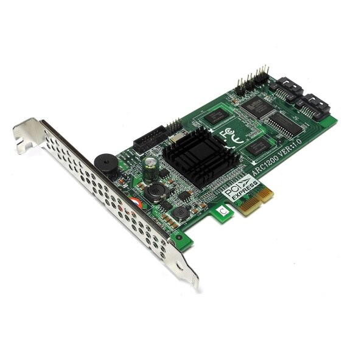
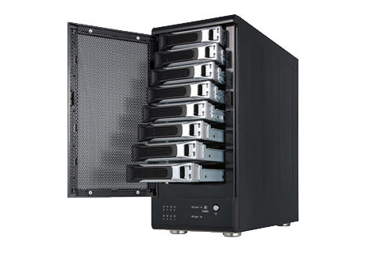
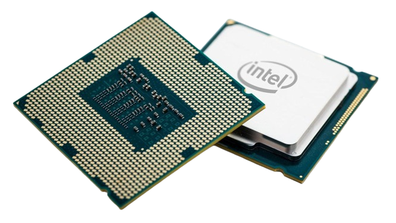
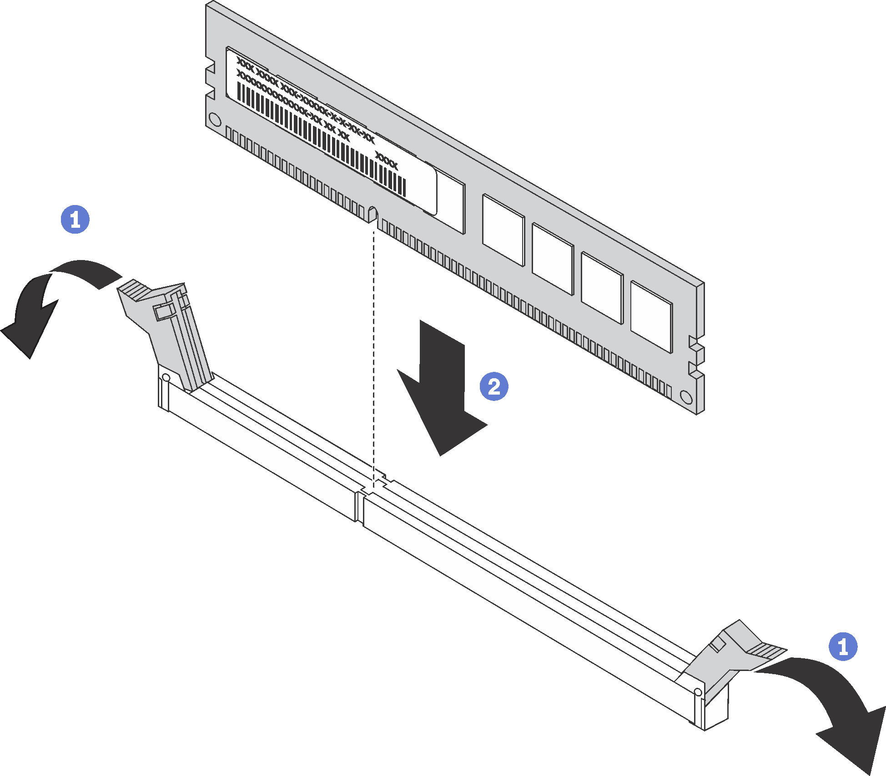
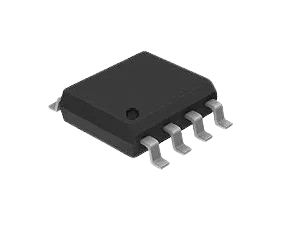

Soluzioni di TroubleShooting per Hardware Avanzato
Benevenuto nella pagina dedicata ai problemi dell'hardware avanzato! In questa pagina ci saranno alcune soluzioni a problemi non comuni, specialmete problemi riguardo il RAID, il BIOS, il BSOD, e alcuni problemi riguardanti il malfunzionamento generale del computer.
PROBLEMI CON IL RAID:
Il RAID è un tipo di storage che organizza le operazioni I/O tra più unità per garantire all'utente una serie di vantaggi prestazionali all'interno di un unico sistema.
I più comuni problemi con il RAID sono due: il primo è che il RAID non viene trovato e il secondo è che il RAID abbia smesso di funzionare.
<
Nel caso il RAID non venga trovato ci sono tre possibili cause: la prima è che il controller del RAID esterno non sia alimentato, e per sistemare ciò bisogna controllare l'alimentazione del controller del RAID.
Un'altra possibile causa può essere che le impostazioni del BIOS non siano corrette, e per sistemare ciò bisogna entrare dentro al BIOS, andare nella sezione del controller RAID e riconfigurare il BIOS per quella sezione.
Infine un ultimo problema che può essere collegato al RAID non trovato può essere che il RAID effettivo sia guasto. L'unico modo per risolvere questo problema è di sostituire il controller del RAID.

Se invece il RAID ha smesso di funzionare può essere dovuto a due motivazioni: la prima è che il controller del RAID esterno non sia alimentato, e una possibile soluzione può essere controllare l'alimentazione del controller RAID (come quando il RAID non viene trovato).
La seconda motivazione per la quale il RAID ha smesso di funzionare è se il controller del RAID è guasto, e una possibile soluzione è di sostituire il controller del RAID.
ERRORI DI BSOD:
 La famosa schermata blu con una faccina triste che vedete non è solo un errore temporaneo, o almeno non in tutti i casi, infatti questo è un problema dato dal BSOD. In questo caso queste soluzioni funzionano anche se il PC si riavvia di sua spontanea volontà o si blocca.
La famosa schermata blu con una faccina triste che vedete non è solo un errore temporaneo, o almeno non in tutti i casi, infatti questo è un problema dato dal BSOD. In questo caso queste soluzioni funzionano anche se il PC si riavvia di sua spontanea volontà o si blocca.
Una probabile e comune causa di questo problema può essere semplicemente che la RAM non funziona correttamente, o magari, nel caso che si abbiano 2 banchi di RAM, uno potrebbe essere completamente rotto.
Nel caso in cui Il computer si riavvia senza preavviso, si blocca o visualizza messaggi di errore o il BSOD ci sono quattro possibili cause:

La prima è che il front-side bus è impostato a valori troppo alti e ci sono due possibili soluzioni: una è quella di ripristinare le impostazioni predefinite di fabbrica della motherboard oppure si può abbassare le impostazioni riguardanti il FSB.
La seconda possibile causa è quella che il moltiplicatore della CPU è settato troppo alto, in questo caso la soluzione è quella di abbassare le impostazioni del moltiplicatore.
Per ultima può essere il voltaggio della CPU che è impostato troppo alto e per questo si può ridurre le impostazioni di tensione della CPU.
ALTRI PROBLEMI COMUNI:
Se il computer è rallentato il problema può essere dato dalla mancanza di RAM, la quale può essere installata semplicemente aprendo il case e inserendo la Ram negli slot dedicati.

Un'altra possibile causa del rallentamento potrebbe derivare dato dal fatto che le ventole del PC siano sporce o non sufficienti; in questo caso si aggiungono ventole o si puliscono le ventole sporche.
Altri problemi possono essere causati dal fatto che il PC non riconosce un'unità esterna o il drive esterno
In questi casi la soluzione si può trovare semplicemente scaricando i drive (coloro che dicono alla CPU precisamente cosa fare; la guidano) corretti oppure collegare l'alimentazione esterna se necessaria o staccando alcune porte USB.
Infatti il PC potrebbe non riconoscere l'unità esterna a causa delle troppe porte USB occupate; in questo caso è consigliabile staccare le porte USB non nesessarie.
In alcuni casi il computer protrebbe non accendersi più dopo aver eseguito un aggiornamento del firmware BIOS, questo problema è dato da una installazione non corretta del firmware del BIOS

L'opzione più semplice per rimediare a questo danno è di verificare se si ha un backup integrato del firmware; nel caso si disponga di ciò, basterà ripristinare la ROM.
Nel caso la vostra MOBO (Mother Board) disponga di un chip secondario del BIOS si può tranquillamente utilizzare il secondo chip senza alcun problema, ma nel caso voi abbiate un solo chip o in qualche modo avete installato in maniera non corretta in entrambi i chip dovrete conttattare il produttore della MOBO per ottenere un nuovo chip.
La sostituzione del chip non è da effettuare di propria mano, se non si è esperti, ma è consigliabile di far sostituire il chip da un negozio specializzato.
Può essere che dopo aver cambiato CPU da una single-core ad una multi-core, il computer sia più lento, e nella gestione risorse nella sezione hardware mostra solo un grafico della CPU, questo puo essere perchè il BIOS non riconosce la CPU multi-core.
Per sistemare ciò bisogna aggiornare il firmware BIOS.